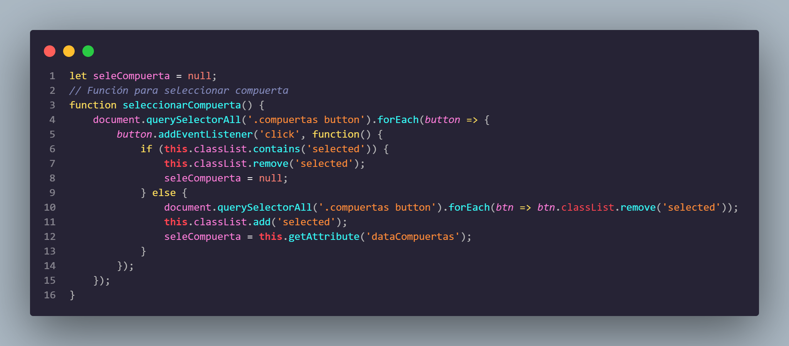
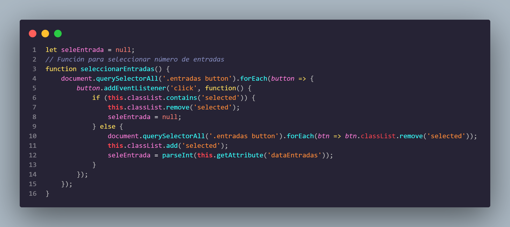
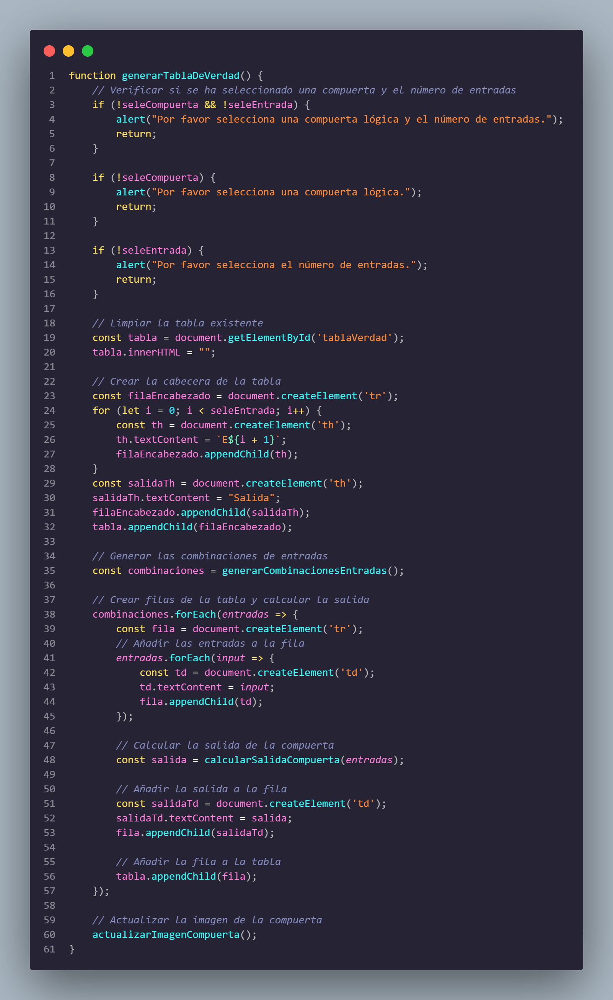
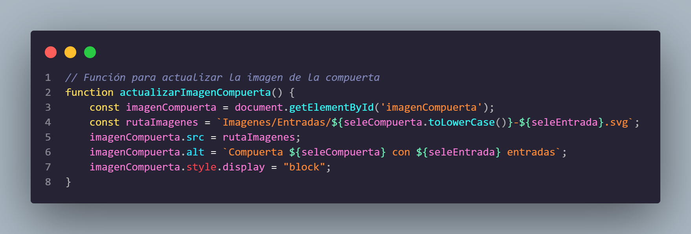

1. seleCompuerta

Función que permite seleccionar una compuerta lógica al hacer clic en los botones correspondientes. Primero, añade un evento de clic a cada botón dentro de la clase "compuertas". Si el botón ya está seleccionado, se deselecciona y se establece `seleCompuerta` en `null`. Si no está seleccionado, se deseleccionan todos los botones, se marca el botón actual como seleccionado y se almacena su atributo `dataCompuertas` en la variable `seleCompuerta`. Esto asegura que solo una compuerta esté seleccionada a la vez.
2. seleEntrada

Función que permite seleccionar un número de entradas al hacer clic en los botones correspondientes. Se añade un evento de clic a cada botón en la clase "entradas". Si el botón ya está seleccionado, se deselecciona y `seleEntrada` se establece en `null`. Si no está seleccionado, se deseleccionan todos los botones, se marca el botón actual como seleccionado y se almacena su atributo `dataEntradas` convertido a un número entero en la variable `seleEntrada`, garantizando que solo una entrada esté seleccionada a la vez.
3. Generar Tabla

Función que genera una tabla de verdad basada en la compuerta lógica y el número de entradas seleccionadas. Primero, verifica que se haya seleccionado tanto una compuerta como un número de entradas; si no, muestra un mensaje de alerta correspondiente. Luego, limpia la tabla existente y crea la cabecera con las entradas y una columna para la salida. Genera las combinaciones posibles de entradas y para cada combinación, crea una fila en la tabla, añadiendo las entradas y calculando la salida correspondiente de la compuerta. Finalmente, actualiza la imagen de la compuerta.
4. Imagen de la Compuerta

Función que actualiza la imagen de la compuerta lógica según la selección realizada. Obtiene el elemento de imagen y construye la ruta a la imagen correspondiente utilizando el nombre de la compuerta y el número de entradas seleccionadas. Asigna esta ruta a la fuente de la imagen y establece el texto alternativo para describirla. Finalmente, cambia el estilo de la imagen para que se muestre en la página.
5. Combinación de Entradas

Función que genera todas las combinaciones posibles de entradas binarias según el número de entradas seleccionadas. Calcula el total de filas utilizando la potencia de 2. Para cada fila, utiliza operaciones de desplazamiento de bits para determinar el valor de cada entrada, que se almacena en un arreglo. Finalmente, devuelve un arreglo que contiene todas las combinaciones generadas.
6. Salida de la Tabla de Verdad

Función que calcula la salida de una compuerta lógica según las entradas proporcionadas y la compuerta seleccionada. Utiliza una estructura de control para determinar el tipo de compuerta (AND, OR, NOR, NAND) y aplica la función de reducción adecuada a las entradas. Al final, devuelve 1 si la salida es verdadera y 0 si es falsa. Si la compuerta no es reconocida, devuelve "Error".
7. Iniciar Funciones al cargar la página

Inicializa la selección de compuertas y entradas al cargar la página. Utiliza un evento que espera a que el contenido del documento esté completamente cargado antes de ejecutar las funciones `seleccionarCompuerta` y `seleccionarEntradas`, asegurando que los elementos necesarios estén disponibles.